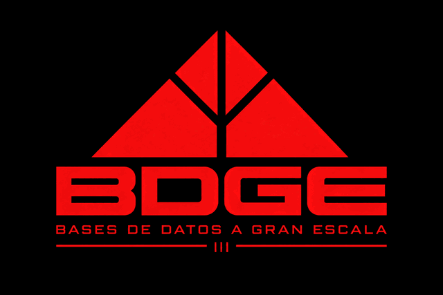

Sesión 0 · Introducción
Introducción a la asignatura BDGE para el curso 2026/2027

Transparencias y boletines · Curso 2026/2027
Introducción a la asignatura BDGE para el curso 2026/2027
Modelado de datos, modelo relacional y consultas SQL
SQL (ii) — DDL, modificación de datos, JSON en SQL y modelado orientado a la eficiencia
Introducción a los sistemas NoSQL — orígenes, características y tipos
Bases de datos documentales, modelado y una introducción a MongoDB desde pymongo
Bases de datos columnares y Apache Cassandra — modelo de datos, distribución, arquitectura y acceso desde Python
Bases de datos de grafos, Neo4j y el lenguaje Cypher — modelado, algoritmos y rendimiento
Introducción
En esta hoja introduciremos la forma de trabajar con Jupyter Notebook/Google Colab.
SQL
Esta hoja muestra cómo acceder a bases de datos SQL y también a conectar la salida con Jupyter.
Trabajos
En las siguientes transparencias se incluyen los trabajos propuestos para la asignatura.
Cypher · Sesión 7
Patrones, recorridos y modelado sobre el grafo de Stack Overflow. Escribe Cypher y ve el resultado dibujado, sin instalar nada.
MongoDB · Sesiones 3 y 4
Consultas y agregación sobre Stack Overflow en español. Escribe find y pipelines y ejecútalos aquí mismo, sin servidor.
SQL · Sesiones 1 y 2
Ejercicios de consulta con Stack Overflow en español. Ejecuta SQL en DuckDB-Wasm sin instalar un servidor.